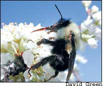
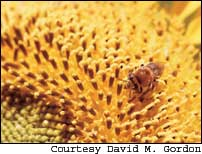
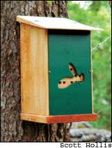

Protect Your Pollinators
August/September 2005
Native bees are essential to ensure a productive garden.
By Barbara Pleasant
You’ll harvest more and bigger fruits and vegetables if you have enough pollinating bees visiting your garden. In some cases, better pollination even means faster maturity and better flavor.
Cornell University researchers have found that bee-assisted pollination of strawberries can increase fruit size up to 40 percent. Other crops that depend upon native bees for pollination include tomatoes, peppers, eggplants, pumpkins, squash and melons, plus most berries and tree fruits. But heavy reliance on pesticides, loss of habitat and monoculture crop systems have decimated pollinator populations.
“Monoculture makes it impossible for any bee - native or otherwise - to keep year-round populations sufficient for pollination,” says David Green, who maintains the native bee Web site www.pollinator.com. “A modern orchard has such a flush of bloom in spring that the pollination task is overwhelming. The rest of the year, it’s starvation or even a toxic environment.”
Besides avoiding pesticides, you can support native bee populations by protecting natural areas on your property, leaving field and road borders unmowed to provide habitat for ground-nesting bees, and planting or preserving stands of native flowering plants (that the bees use for food) in pastures and hedgerows. A diverse selection of flowering plants and food crops ensures that pollinators have a steady supply of nectar and pollen throughout the growing season.
Take a close look at the flowers in your garden and you will quickly see that honeybees, which are native to Europe, have plenty of company, including numerous native bee species with specialized talents. But while honeybees are commonly protected by a beekeeper, native bees have no human guardians. This is why it’s important to help build native bee populations in your own area.
Like honeybees, native bees feed on nectar while gathering pollen to take back to their nests as food for their young. In the process, they pollinate flowers, often doing a better job than honeybees on certain crops such as apples, berries, alfalfa and almonds. Bumblebees are the preferred pollinators for greenhouse-grown tomatoes, and pumpkin growers from Wisconsin to Alabama are recognizing the value of squash bees - short-lived native species that often outnumber honeybees visiting squash blossoms, even when honeybee hives are nearby. In areas where cool temperatures limit honeybee activity during the spring blooming of fruit trees, native mason bees do the job because they are better adapted to cool weather.
Pollination in some crops is a collective effort among different species, however. Researchers at Ohio State University found that 18 species of native bees were doing most of the pollinating work in nearby strawberry fields.
These native bees don’t produce honey, and they can’t be reared in managed hives. But when they are given even small patches of suitable habitat, such as a fence row or diverse garden, some of the 4,000-plus species of native bees will show up.
“In a 20-acre woodland park that includes trees and flowers and that hasn’t been sprayed with pesticides, there may be 100 species of native bees present on a summer day,” says Jim Cane, research entomologist at the U.S.epartment of Agriculture’s Bee Biology Lab in Logan, Utah.
According to the National Sustainable Agriculture Information Service, the following native bees are particularly good pollinators of certain crops, although they pollinate other flowering plants, as well:
• Alkali bees: onions, clover, mint and celery
• Bumblebees: blueberries, tomatoes, eggplants, peppers, melons, raspberries, blackberries, strawberries and cranberries
• Carpenter bees: passionfruit, blackberries, canola, corn, peppers and beans
• Leafcutter bees: legumes, especially alfalfa, and carrots
• Mason bees: almonds, apples, cherries, pears, plums and blueberries
• Shaggy fuzzyfoot bees: blueberries and apples
• Squash bees: squash, gourds and pumpkins
It’s also important to understand that male bees can’t sting (a bee stinger is a modified egg-laying organ), and females won’t sting unless they are provoked. “They have no honey to protect, so they are not built to defend themselves from mammalian predators,” Cane says. If you find that you like sharing the company of native bees, or you want to enlist their help to pollinate your plants, some species will accept human invitations in the form of nesting boxes.
Wild Bee Lifestyles
Big, fuzzy, black-and-yellow bumblebees and a few types of small sweat bees are the only native bees that live in colonies. Most other species live alone and associate with others only long enough to mate. Mason bees, carpenter bees and leafcutter bees are called cavity nesters because they make their nests in the holes of trees, fence posts, firewood, hollow plant stems or handmade bee nesting blocks. More numerous ground-dwelling bees dig tubular burrows no larger than a drinking straw. Bumblebees often make their home in underground burrows vacated by rodents.
Like honeybees, bumblebees are general feeders that visit a broad range of host plants. But many wild bees have restrictive tastes and stick close to the plants they were born to serve. Squash bees, for example, followed early strains of squash as native people moved the crop northward from Central America. Females emerge in early summer and only fly in the morning when squash blossoms are open. In the afternoon, you often can find males curled up asleep in closed squash flowers (yes, bees do sleep). Cane recently worked with the specialist bee that pollinates only rabbiteye blueberries - and that does so with amazing efficiency. The adult life of a specialist bee is quite short, but in only a few weeks, just one of them often out-pollinates 100 honeybees.
Because specialist bees need pollen from specific plants, they tend to stay close to home and forage in smaller plantings, says James Tew of Ohio State University’s Honey Bee Lab. Most native bees pose no problem for plants, though leafcutter bees do harvest rounded leaf pieces from roses, ash trees and several other plants, which they use to build their nests. “The small amount of leaf material taken is a bargain when the pollination activities of leafcutter bees are considered,” Tew says.
Various species of leafcutter bee have been found to be much better pollinators of alfalfa, blueberries, carrots, sunflowers and onions than honeybees. For example, in an enclosed greenhouse where carrots were being grown for seed, researchers found that 150 leafcutter bees could do the work of 3,000 honeybees. One non-native species, the alfalfa leafcutter bee, is now reared by the millions because it does such an outstanding job pollinating alfalfa grown for seed.
The Native Edge
Particular characteristics contribute to native bees’ pollination talents. Many native bees are quite hairy, and tufts of hair (such as those on the abdomens of female leafcutter bees) serve as soft brushes that gently transfer pollen from a flower’s stamens to its stigma (the female part that connects to the ovary). The buzz factor also is important because some flowers, such as blueberries and most members of the tomato family, need to be vibrated to shake the pollen loose from the stamens. Scientists call this process “sonication,” but Arizona entomologist Stephen Buchmann (co-author of The Forgotten Pollinators) came up with another phrase: “buzz pollination.” Bumblebees, digger bees and several other native bees are great buzz pollinators.
The diversity of native bees matches the diversity of native plants. With the help of his camera, David Gordon, a professor of zoology at Pittsburg State University in Kansas, has seen that some native bees have long tongues, so they can lap nectar from tubular flowers while others have shorter tongues more suited to flat blossoms. Native bees also vary in size from half-inch iridescent sweat bees to 1½-inch carpenter bees. Tiny bees can access the littlest flowers for pollination purposes while bigger bees buzz blossoms, tramping pollen from place to place with their feet, and sometimes accidentally improving pollination by chasing honeybees across the faces of sunflowers and other big-blossomed plants.
Enhancing Habitat
Native bees seldom travel more than a quarter mile from their nests, so improving bee habitat can have a very direct benefit in your garden. The Xerces Society, a nonprofit insect preservation group based in Portland, Ore., suggests several simple ways to make your property more hospitable to native bees:
• Minimize the use of pesticides and avoid spraying botanical or biological insecticides in the morning, when native bees are most active.
• Grow a diverse selection of flowering plants (including as many native species as possible).
• Grow crops such as squash, sunflowers, blueberries and strawberries every year to maintain resident populations of the specialist bees that serve them.
• Leave some areas uncultivated so you don’t disturb bees that nest in the ground.
The same plants that attract butterflies and beneficial insects often attract native bees; both insect groups are most numerous where plants bloom over a long season. For example, early spring-blooming willows and redbuds can be followed by fruit trees, brambles and red clover before your summer vegetables and flowers take over as primary host plants. Then keep the pollen flowing into fall by growing late-blooming asters and allowing goldenrod to flourish along fence rows.
With a solid food supply nailed down, you can further encourage native bees by providing attractive nesting sites. For ground-nesting bees, a patch of uncultivated, well-drained soil that gets morning sun will work well as long as you avoid disturbing it with vehicles and tractors. You also can make a sand pile or sand pit - or simply fill a planter with sand and place it on a warm, south-facing slope. If you see bumblebees buzzing around the roots of a tree, leave them alone. They probably have established a colony in a burrow vacated by mice or voles.
Beyond the benefits of improved crop pollination, good food and habitat for native bees has a ripple effect in the natural world. Native bees pollinate forest trees and wildflowers, which in turn provide food for wildlife. Cane says that because wild bees are vegetarians, they will never ruin your barbeque by buzzing around your burgers. “Sit down and enjoy the bees,” he suggests. “They are great fun to watch.”
Barbara Pleasant is a veteran Mother Earth News contributing editor and award-winning book author. She lives in the mountains of western North Carolina.
Making Homes for Wild Bees
Solitary cavity-nesting species such as mason bees are attracted to logs and dead trees, as well as hollow branches such as bamboo or sumac. Elderberry stems also are good because they have a soft pith that’s easily cleaned out.avid Green of www.pollinator.com says don’t place elderberry stems out too late in spring because they also are susceptible to potter’s or mason wasps - although those are beneficial natives, too. Wild bees also will make their home in a suitable handmade dwelling, in a dead tree trunk, block of wood or bundle of tubes. Here are three easy-to-make bee homes:
Bundled Sticks
Bundle together a dozen or so 10-inch-long pieces of half-inch-diameter bamboo or sumac that have been hollowed out at one end with a drill or awl. Stuff the bundle into a coffee can or piece of PVC pipe, and then wire it securely onto a tree branch or fence post.
A Nesting Block
Start with an 8-inch-long piece of untreated 4-by-6 or 6-by-6 wood post, or use a short log.rill three-eighths-inch holes, 6 to 7 inches deep and at least 1 inch apart. Blacken the front of the block by placing it in a fire for a minute or two. Attach the block to a post or tree branch.
A Bee Stump
Drill into a tall existing tree stump, making 6-inch-deep, three-eighths-inch holes that are spaced 2 inches apart on the south and east sides of the stump.
General Tips
A secure entrance is crucial, so holes about three-eighths inch in diameter are best. The tube-shaped holes also should be at least 6 inches deep, so you will need an extension bit for your drill. Several species can control the gender of their offspring, and they like to place female eggs deep in their burrows, with male eggs closer to the entrance. That way, males will be waiting when the females emerge. The holes should be closed at one end to ensure the safety of the eggs, too.
Early spring is the best time to put out new bee nesting blocks, because that’s when females are seeking new homes. Locate the nests at least 3 feet off the ground in a place where they will get warm morning sun and attach them securely so they won’t shake in the wind. Make the holes slope slightly upward so rainwater does not run into the holes. As summer progresses, you will know you have tenants if the holes or tubes become plugged with mud or debris.
Good Management of Carpenter Bees
If you spot a large bee buzzing around your home that looks like a shiny bumblebee without its fuzz, it’s probably a carpenter bee. These are some of the largest bee species and have a blue-black, green or purple metallic sheen. Male carpenter bees can be curious and fly close to humans, but they are completely harmless because they have no stingers. Females can sting, but they rarely do. Carpenter bees help pollinate numerous crops such as corn, pole beans, peppers and blackberries.
Carpenter bees (Xylocopa species) may want to share your home sooner or later if you have a wood house or a wood deck. Females bore half-inch-wide holes into wood and then excavate a burrow to raise their young, often reusing old nests year after year. They will burrow into dry wood wherever they can find it, but they prefer softwoods such as pine. The damage they do to the wood, however, is mostly cosmetic.
Extension entomologists unanimously agree that the best way to prevent carpenter bee damage is to keep wood surfaces painted (stains don’t deter them nearly as well as paint). Some people have good luck plugging bee entry holes with aluminum window screening held in place with duct tape. After a few weeks, remove the duct tape and fill the hole with wood putty.
“Carpenter bees are very selective of their nesting wood,” says James Tew of Ohio State University’s Honey Bee Lab. “If only a few boards are being targeted and the plugging trick doesn’t work, consider replacing those boards and hope that the new ones are not as attractive.” But because carpenter bees are beneficial, make sure they have wood available that they can use. That way, both you and the bees are happy.
Pollinator Bee Resources
The Xerces Society
(503) 232-6639
www.xerces.org
Xerces offers fact sheets on pollinator conservation and also sponsors programs to safeguard the diversity of native insects.
The University of Georgia’s
Honey Bee Program
Has excellent guidelines for creating a permanent pasture as habitat for native bees at www.ent.uga.edu/bees/pollination/pollination.htm. Click on “Establishing a Bee Pasture.”
Beediverse Products
(800) 794-2144
www.beediverse.com
Offers books and supplies for managing mason bees, including well-made bee houses and other bee-related products.
The Pollination Home Page
www.pollinator.com
This Web site is a labor of love by South Carolina bee man David Green, with links to bee information, projects and regional wild bee expertise.
International Pollination Systems
www.pollination.com
Commercial providers of leafcutter bees. The Web site is rich with wild bee information.
|
 Bumblebees use their long tongues to feed on the flower nectar of fruit and garden crops, and their fuzzy hair picks up and distributes pollen. |
 A digger bee feeds on and pollinates a sunflower. |
 This well-made nesting box for orchard mason bees from www.beediverse.com) features cleanable stacking trays and a green predator guard to preven woodpeckers from eating the bee cocoons and larvae. |
 Above: When berries arenot fully pollinated by bees, small and malformed fruit often is the result. Right: Bees have successfully pollinated this berry. |
|
|